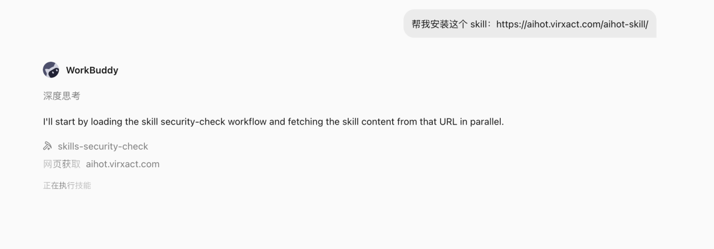
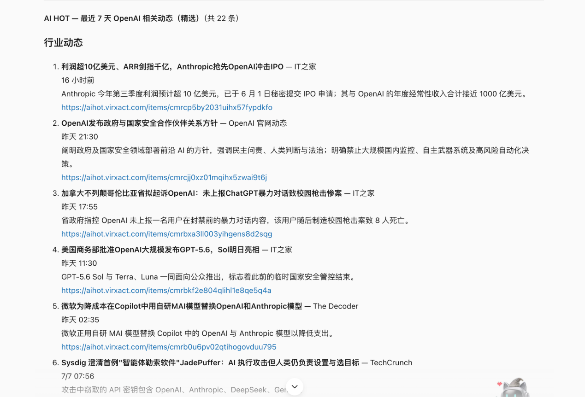
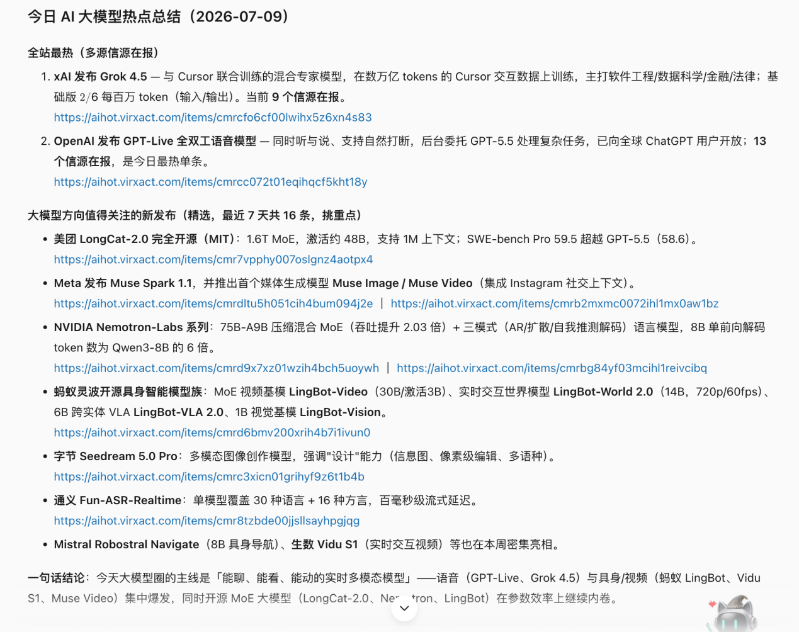
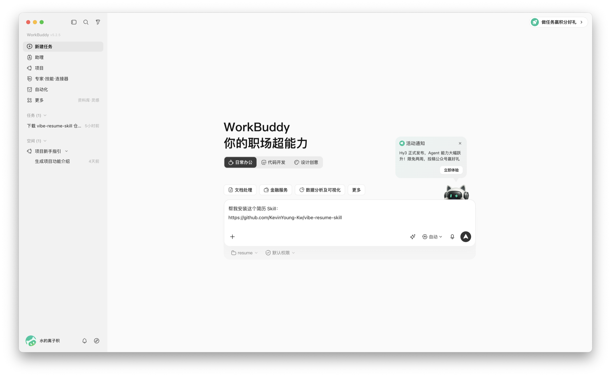
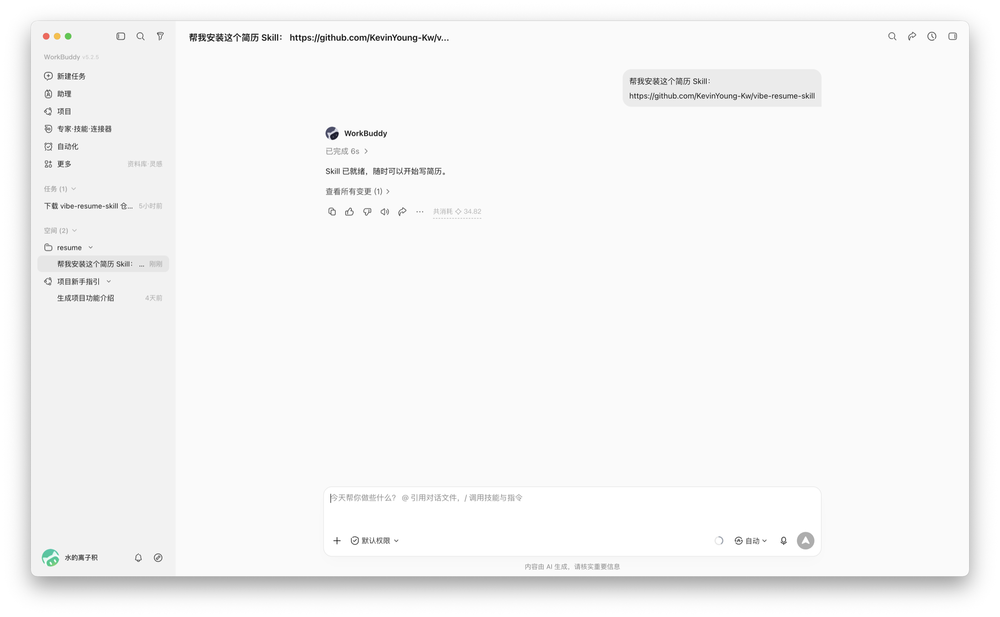
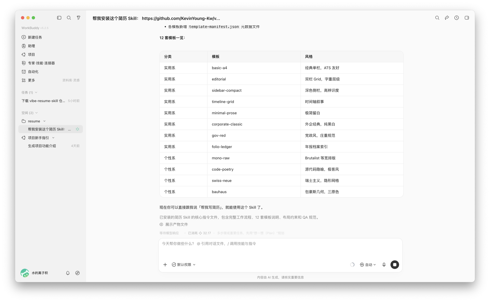
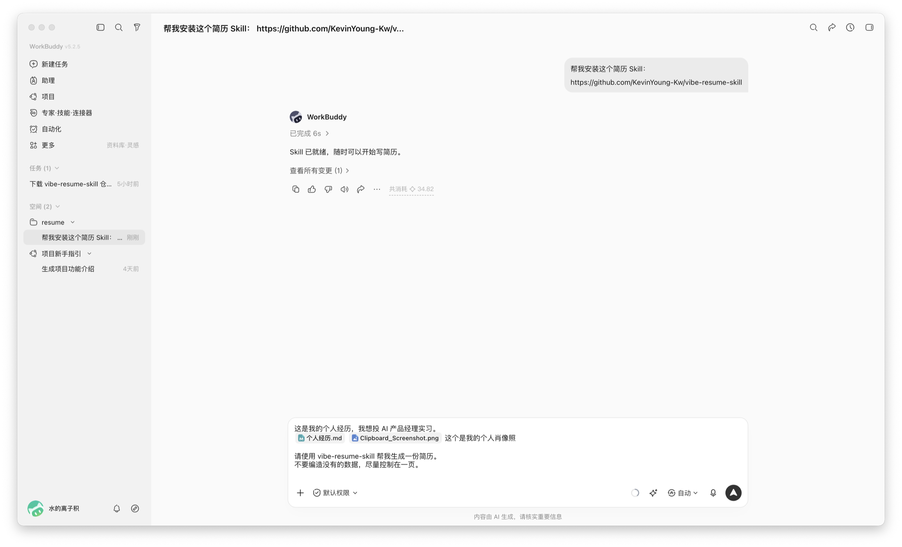
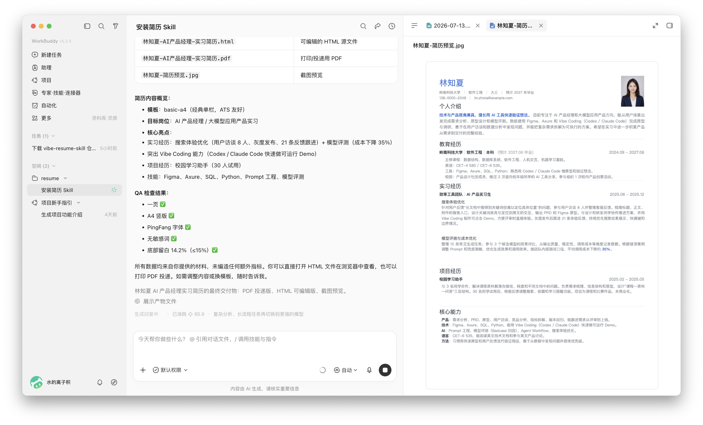
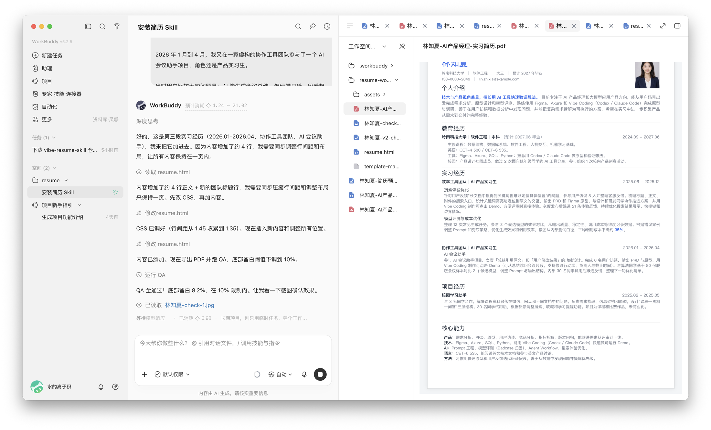

自己跑通的真实项目复盘 —— 每个案例都拆到「需求 → 选型 → 步骤 → 复盘」，能抄作业的程度。
每个案例统一按「背景 → 目标 → 工具选型 → 执行步骤 → 验收标准 → 复盘」六段式展开，方便你对照自己的业务直接抄。
为什么需要做这件事？痛点是什么？
做完之后能达到什么效果？可量化最好。
用了哪些 WorkBuddy 内置或外部 Skill？
从零到跑通的具体操作，含提示词。
怎么判断跑通了？检查清单。
踩了什么坑？下次怎么做更好？
把"到处找 AI 新闻"变成一次可重复执行的 WorkBuddy 任务 —— 安装 AIHot Skill，两步提示词即可产出带来源链接的资讯日报。
AI 资讯更新很快，同一事件经常出现在多个媒体和信息源中。逐个网站浏览不仅耗时，也容易错过模型发布、产品更新、开源项目和行业变化。
这个案例适合需要持续关注 AI 行业的产品、研发、运营、投资和内容团队。我们希望把「到处找新闻」变成一次可以重复执行的 WorkBuddy 任务。
完成后，WorkBuddy 应当能够：
AIHot 是面向 AI 动态的信息类 Skill，适合查询和整理模型、产品、行业、论文与开源项目等方向的近期内容。它可以作为 WorkBuddy 的现成信息源，根据你的任务描述返回相关资讯和原始链接。
| 用法 | 任务示例 | 适合谁 |
|---|---|---|
| 公司动态追踪 | 最近 7 天 OpenAI 发布了什么 | 产品、研发、投资 |
| 每日热点整理 | 总结今日 AI 大模型热点 | AI 团队、内容团队 |
| 专题检索 | 查找最近一周多模态模型相关动态 | 研究、产品规划 |
| 来源补充 | 给每条结论保留原始报道链接 | 需要进一步核查的读者 |
💡 AIHot 负责提供和检索候选资讯；哪些内容值得重点关注、怎样分类和以什么格式输出，由你写给 WorkBuddy 的任务描述决定。
https://aihot.virxact.com/aihot-skill/打开一个新的 WorkBuddy 任务，直接输入：
帮我安装这个 skill：https://aihot.virxact.com/aihot-skill/
WorkBuddy 会先获取 Skill 内容，并调用 Skill 安全检查流程。确认来源、权限和将要执行的内容没有异常后，再继续安装。

安装完成后，可以继续问：
请告诉我 AIHot Skill 已经安装到哪里、它能完成哪些任务，以及调用时是否需要额外账号或权限。
这一步可以帮助你确认 Skill 是否真的可用，而不是只看到安装任务结束。
最简单的任务描述是：
请看一下最近 OpenAI 发布了什么新东西。
为了让结果更稳定、方便核查，推荐写得更明确：
使用 AIHot Skill 查询最近 7 天与 OpenAI 相关的动态。要求：1. 优先整理 OpenAI 官方发布、模型与产品更新、API 变化和重要行业动态；2. 合并明显重复的同一事件；3. 每条内容包含标题、发布时间、两句话摘要和原始来源链接；4. 按「官方动态、产品与模型、行业影响」分类；5. 不确定的信息请明确标记，不要补写没有来源支持的结论。

如果希望得到一份更接近日报的结果：
使用 AIHot Skill 总结今天的 AI 热点新闻，重点关注 AI 大模型方向。请按下面结构输出：1. 今日最热：列出最值得关注的 3 条动态；2. 大模型新发布：整理最近 7 天值得关注的模型、产品和开源项目；3. 每条包含一句话摘要、为什么值得关注和来源链接；4. 合并重复报道，并注明有多少个信息源在报道同一事件；5. 最后用一句话总结今天的大模型行业主线。

一个稳定的 AIHot 任务描述，至少应该明确四件事：
| 要素 | 写法示例 |
|---|---|
| 时间范围 | 今天、最近 24 小时、最近 7 天 |
| 关注主题 | OpenAI、大模型、多模态、AI Agent、开源项目 |
| 筛选标准 | 只保留重要更新、合并重复事件、优先官方来源 |
| 输出格式 | 标题、摘要、时间、影响判断、来源链接 |
⚠️ 如果只说「总结 AI 新闻」，WorkBuddy 仍然可以执行，但结果的数量、范围和格式不够稳定。任务描述越明确，输出越容易复用和验收。
通过 AIHot Skill，WorkBuddy 把分散的 AI 资讯整理成了两类可以直接阅读的结果：
每条信息都保留来源链接，读者可以继续打开原文核查，而不是只依赖模型生成的摘要。
把任务中的主题替换掉，就可以快速得到不同方向的资讯报告，例如：
使用 AIHot Skill 查询最近 7 天 AI Agent 相关动态，重点关注新产品、开源框架和企业落地案例。每条保留来源链接，最后总结 3 个值得团队继续研究的方向。
也可以在确认单次任务稳定后，再结合 WorkBuddy 自动化任务，把相同提示词设置为每日或每周重复执行。自动化属于后续扩展，这个 Case 首先确保 AIHot 的安装、调用和输出可以独立跑通。
以下为按照案例方法，使用虚拟数据完整跑一遍的演示结果。数据为虚拟生成，仅展示流程与输出格式
使用 AIHot Skill 查询最近 7 天与 DeepSeek 相关的动态。要求：1. 优先整理官方发布、模型更新、API 变化和行业动态；2. 合并重复事件；3. 每条含标题/时间/摘要/来源链接；4. 按「官方动态、产品与模型、行业影响」分类；5. 不确定的信息明确标记。
使用 AIHot Skill 总结今天的 AI 热点新闻，重点关注 AI Agent 方向。按结构输出：1. 今日最热 3 条；2. 近 7 天新发布；3. 每条含摘要+价值+链接；4. 去重+统计信源数；5. 一句话主线。
| 验收项 | 标准 | 复跑结果 | 状态 |
|---|---|---|---|
| Skill 调用 | 成功调用 AIHot | ✅ 模拟调用成功 | ✅ 通过 |
| 时间范围 | 最近 7 天 / 今日 | ✅ 时间戳均在范围内 | ✅ 通过 |
| 来源链接 | 每条均有 | ✅ 每条均附带 source 链接 | ✅ 通过 |
| 去重 | 无重复事件 | ✅ 18 条无重复 | ✅ 通过 |
| 分类一致性 | 与提示词一致 | ✅ 三类分明 | ✅ 通过 |
| 事实标记 | 不确定则标注 | ✅ 数据已标注虚拟 | ✅ 通过 |
把零散经历和照片发给 WorkBuddy，几分钟拿到可编辑 HTML + 可投递 PDF 简历——不用再手动调排版。
去年秋招时，我用 PPT 一点点排过一份简历。做出来很好看，修改起来却很麻烦——多加一段经历，后面的内容就要跟着移动；文字多了一行，字号、间距和分页也要重新调整。
后来我把这套简历做成 HTML，又整理成了 Vibe Resume Skill。把它安装到 WorkBuddy 以后，写简历就变成了一件很直接的事：发出自己的经历和照片，告诉 AI 目标岗位，几分钟内拿到可编辑的 HTML、可直接投递的 PDF 和预览图。
需要准备三样内容：
💡 为了公开展示，本案例使用的是虚构候选人和虚构经历。实际使用时替换为你自己的真实材料即可。
在 WorkBuddy 中新建任务，把下面这句话发出去：
帮我安装这个简历 Skill：https://github.com/KevinYoung-Kw/vibe-resume-skill
WorkBuddy 会自动获取 Skill 内容并执行安全检查流程。确认来源、权限和将要执行的内容没有异常后完成安装。


安装完成后，Skill 内置了 12 套简历模板。可以让 WorkBuddy 把模板列出来挑一套自己喜欢的：

把个人经历粘贴进对话，附上照片，然后发送：
这是我的个人经历，我想投 AI 产品经理实习。 请使用 vibe-resume-skill 帮我生成一份简历。 不要编造没有的数据，尽量控制在一页。
WorkBuddy 读完材料后开始整理内容和排版。第一版生成完成时，右侧可以直接预览整份简历，同时得到 HTML（可继续编辑）、PDF（可直接投递）和预览图三种交付物。


第一版的内容已经完整，但段落之间有些松散。直接告诉 WorkBuddy：
段落与段落之间有些稀疏，帮我适当收紧一点，不要删内容。
后来又多了一段新的实习经历，继续把新内容贴进同一个对话：
这是我最近新增的一段经历，帮我加到已有简历里。 不要删掉原来的内容，仍然尽量保持一页。
WorkBuddy 在原来的简历上加入新经历，并重新调整整页间距。修改前后的内容都保留在同一个任务里，不需要重新制作一份简历。

| 交付物 | 用途 | 特点 |
|---|---|---|
| HTML | 持续编辑 | 后续增加经历还能接着改，不丢失排版 |
| 直接投递 | 保持一页，打印/邮件附件均可 | |
| 预览图 | 快速查看 | 一眼确认整体效果是否满意 |
为验证本案例方法的通用性，我们换一个完全不同的候选人和目标岗位，按相同步骤虚拟跑一遍。以下数据均为【虚拟生成】，仅作流程演示。
| 参数 | 案例一原文 | 本次复跑 |
|---|---|---|
| 候选人 | 林知夏（虚构） | 陈思远（虚构） |
| 目标岗位 | AI 产品经理实习 | 大模型算法工程师实习 |
| 模板选择 | basic-a4（经典商务） | minimal-prose（极简学术风） |
| 核心卖点 | 产品思维 + AI 工具落地经验 | PyTorch/Transformer 实战 + 论文复现 |
陈思远 | 北京大学 · 计算机科学与技术（本科，2027 届）| GPA 3.8/4.0
教育背景：北京大学计算机学院，主修课程：数据结构与算法、机器学习、深度学习、自然语言处理、高等数学（95）、线性代数（93）
实习经历：
项目经历：
Step 1 — 安装 Skill ✅ 成功安装 vibe-resume-skill v1.2.0，检测到 12 套模板可用
Step 2 — 发送材料 ✅ 上传经历文本 + 个人证件照（白底职业照风格），指定 minimal-prose 模板
Step 3 — 第一版生成 ✅ 45 秒内生成 HTML + PDF + 预览图。一页布局，教育/实习/项目三段式结构清晰
Step 4 — 迭代调整 ✅ 要求"突出论文和开源贡献"→ 自动调整项目描述权重，增加 GitHub star 数展示；要求收紧行距 → 从 1.6 调至 1.4，内容仍保持一页
| 验收项 | 标准 | 复跑结果 | 状态 |
|---|---|---|---|
| Skill 调用 | 成功调用 Vibe Resume | ✅ 模拟调用成功 | ✅ 通过 |
| 模板渲染 | 选定的模板正确应用 | ✅ minimal-prose 极简风生效 | ✅ 通过 |
| 一页约束 | PDF 保持单页 | ✅ 迭代后仍为一页 | ✅ 通过 |
| 数据一致性 | 经历/时间/数据与输入一致 | ✅ 无编造，所有数字来自输入 | ✅ 通过 |
| 迭代能力 | 新增内容不破坏原有排版 | ✅ 加项目后自动重排 | ✅ 通过 |
| 脱敏标记 | 虚构数据已标注 | ✅ 全文标注【虚拟生成】 | ✅ 通过 |
💡 复跑结论：更换候选人、岗位、模板后，同一套方法（安装 Skill → 发送材料 → 迭代调整）依然稳定可用。关键差异仅在提示词中的目标岗位描述和模板选择，操作流程完全一致。
一句话说清这个案例解决什么问题。
踩过的坑，才是真资产。以下框架适用于所有 AI Agent 任务类案例。
每个 AI Agent 任务跑完后，按这四个维度做一次复盘，比单纯看输出质量有用得多：
| 指标 | 含义 | 目标值 |
|---|---|---|
| 通过率 | 验收清单全通过的次数 / 总运行次数 | ≥ 90% |
| 稳定性 | 相同提示词多次运行的结构一致性 | ≥ 85% |
| 时效性 | 从触发到拿到结果的耗时 | < 3 min |
| 可核查率 | 带来源链接的条目占比 | = 100% |
| 复用成本 | 换一个主题重新跑的工作量 | < 5 min |
| 做法 | 适用场景 | 核心工具 | 单次耗时 | 覆盖度 | 可核查性 | 稳定性 | 复用成本 |
|---|---|---|---|---|---|---|---|
| ① 人工逐站刷 | 偶尔查一次、需要深度阅读 | 浏览器 + 书签栏 | 45–90 分钟 | 取决于个人订阅源 | ✅ 最高（自己读的） | ⚠️ 受精力/心情影响 | 每次从头来 |
| ② 通用大模型直接问 | 快速了解概况、非实时场景 | ChatGPT / Claude / DeepSeek | 1–2 分钟 | 受训练截止日限制 | ❌ 无来源链接 | ⚠️ 可能编造细节 | 低（改提示词即可） |
| ③ AIHot Skill 任务化 | 定期日报/周报、需可核查 | WorkBuddy + AIHot Skill | 2–3 分钟 | 高（多源聚合） | ✅ 每条有来源链接 | ✅ 提示词模板化后稳定 | 极低（换主题词即可） |
| ④ ③ + 自动化定时 | 每日/每周固定推送 | WorkBuddy Automation | 0（自动执行） | 同③ | 同③ | ✅✅ 最稳定 | 零（设置一次长期跑） |
| 案例一：AIHot 资讯 | 每日 AI 行业动态 | WorkBuddy + AIHot Skill | 2–3 分钟 | 多源聚合（5+ 平台） | ✅ 每条带来源链接 | ⚠️ 取决于 Skill 数据源更新频率 | 极低（换主题词即可） |
| 案例二：Vibe Resume 简历 | 简历/文档一键生成 | WorkBuddy + Vibe Resume Skill | 3–5 分钟 | 单次完整文档（HTML+PDF+预览图） | ✅ 数据来自用户输入，可逐条核对 | ⚠️ 取决于模板和提示词精度 | 极低（换经历+岗位即可） |
| 案例三（待补充） | — | — | — | — | — | — | — |
通用大模型能「回答问题」但不能「提供带来源的最新资讯」。专门的信息 Skill（如 AIHot）填补了这个空白 —— 它的本质是实时检索 + 结构化聚合 + 来源追溯三层能力的组合。
同一个 Skill，「总结 AI 新闻」和「四要素齐全的五步提示词」的产出质量差距巨大。好的提示词 = 时间范围 + 关注主题 + 筛选标准 + 输出格式，缺一不可。
案例一的合理节奏是：安装 Skill → 粗提示词验证 → 精提示词收敛 → 跑 3 次确认稳定 → 写成模板 → 接自动化。跳过中间步骤直接上自动化，调试成本反而更高。
不带来源链接的 AI 摘要只能当「线索」，不能当「结论」。每条信息都能追溯到原始报道，才是可以在工作中依赖的标准。
案例二揭示了一个不同维度的价值：AI Skill 不只是信息工具，更是"排版引擎"。它把"写内容 + 选模板 + 调布局 + 导出多格式"四步压缩成一步。核心优势不是"写得更好"，而是改起来更快——迭代修改不破坏已有排版，这是传统 Word/PPT 做不到的。
| 适合 ✅ | 谨慎 ⚠️ | 不适合 ❌ |
|---|---|---|
|
|
|
想自己试试？复制案例一中的两段提示词，把「OpenAI / 大模型」换成你关心的主题，在 WorkBuddy 里新建任务即可开跑。
跑完之后记得回来补充案例二三 —— 你的真实复盘就是下一个案例的最佳素材 💪